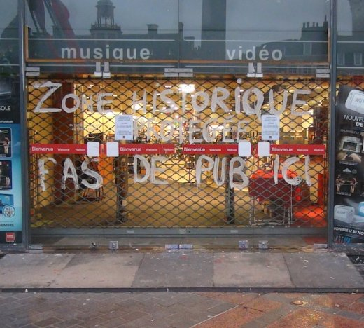

| |
Site dédié à la publication d'informations communiquées par le Collectif des déboulonneurs. En aucun cas ce site n'appelle à des actions illégales. | |
 |
||
|
Accueil du site > Lille > [Lille] Compte-rendu des 5 actions de décembre
Les Déboulonneurs lillois ont agit 5 fois en décembre !
Notre cible : un écran numérique de 7m installé sur la Grand place de Lille, une zone historique protégée. Le Furet du Nord clame que l’écran est légal car installé dans sa vitrine et donc qu’il n’est pas soumis aux réglementations. Nous appelons ça un contournement de la loi, l’effet visuel étant strictement le même devant ou derrière la vitre. La Mairie et les Bâtiments de France ont dit dans la presse avoir attaqué le Furet du Nord. Mais comme le dit si bien Nord-Eclair (12-12-12) : "Le temps de la justice n’est pas celui des déboulonneurs". Mardi 4 décembre, 6 oeufs de peinture (blanche et bleue) lancés. Panneau nettoyé jeudi matin. Jeudi 6 décembre, 9 oeufs de peinture (blanche et rouge) lancés. Panneau nettoyé vendredi midi. Samedi 8 décembre, une dizaine de lanceurs. Panneau nettoyé le lendemain. Mardi 11 décembre, 6 oeufs de peinture lancés sous le regard des policiers, de 2 personnes du magasin et de GrandLille TV. Relevé d’identité, tentative d’intimidation de la part du Furet. Panneau nettoyé le lendemain Mercredi 12 : article dans Nord-Eclair et reportage GrandLille TV. Samedi 15 décembre, le message : "Zone historique protégée, pas de pub ici" a été peint au blanc d’Espagne sur les portes vitrées, juste sous le panneau. Une sucette a également été barbouillée "Marre de la Pub" et "Stop pub" pour rappeler qu’il n’y a pas que l’écran qui nous gène. Les passants rencontrés sont très majoritairement contre cet écran publicitaire. Le Furet n’a pas encore compris que cet écran nuit à sa propre image... et il court toujours. ====================================== LILLE / ANTI-PUB : L’écran du Furet dans le viseur des déboulonneursPublié par Nord Eclair, le mercredi 12 décembre 2012 à 06h00 Début novembre, le collectif des déboulonneurs l’avait déjà bombardé. Mardi, jeudi, et samedi derniers, rebelote. Mais rien n’y fait. L’écran lumineux accroché sur la façade du Furet du Nord, depuis cet été, est toujours là. L’enseigne aurait-elle choisi de jouer la montre ? Possible. Car le mois dernier, la communication de l’enseigne nous avait fait savoir qu’elle ne comprenait pas en quoi cet écran est gênant, et n’avait pas dit qu’il serait prochainement démonté. De son côté, la Ville nous avait indiqué, par la voix de Jacques Richir, adjoint à la qualité de l’espace public, qu’elle a saisi la Justice au regard du règlement local de publicité. Lequel stipule bien qu’aucune publicité n’est acceptée en secteur sauvegardé. Sauf que le temps de la Justice n’est pas celui des déboulonneurs, qui hier soir encore, avaient décidé d’agir, à leur façon. |
|
Site utilisant SPIP - Hébergement Ouvaton
|